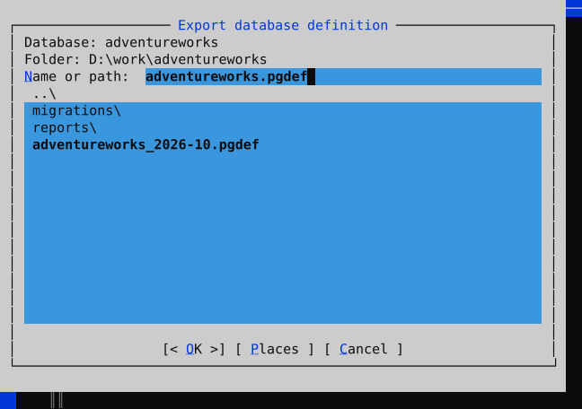

Database definition: export and load
Save the whole structure of a database — not its data — into one file. Later, load that file against another database: pgtc compares the two and writes the SQL that brings the database to the structure in the file.
What it is good for
- Bring test or production up to date. Export the definition of your development database; load it against the test database; review and run the script. Only the differences are in it.
- Clone a structure. Load a definition into an empty database: the script creates everything.
- Keep the structure in version control. The file is text with a fixed order, so two exports of the same structure are identical and a change shows as a clean diff.
- See what changed. Load last month's file against today's database… or simply compare two files with any diff tool.
This is about structure: tables, columns, constraints, indexes, views, functions, … No rows
are exported or copied. For data, use pg_dump, or export a result.
Exporting a definition
- In the object tree, put the cursor on the database (the database row itself).
- Choose — or F2 on the database and .
- Choose the folder and type a file name ending in
.pgdef, for exampleadventureworks.pgdef, then Enter. An existing file is overwritten only after a question.

.pgdef files are highlighted.pgtc reads the structure through a connection of its own (Reading the structure of adventureworks…), writes the file in the background and then says Definition of adventureworks exported to … in the status line. You can keep working meanwhile.
The export always takes the whole database; there is nothing to choose.
The menu item is available only while a database row is selected.
The .pgdef file
A .pgdef file is JSON — readable text. This is the start of a small
one:
{
"format": 1,
"schemas": [
{
"name": "sales",
"tables": [
{
"name": "customer",
"columns": [
{
"name": "customerid",
"type": "integer",
"not_null": true
},
{
"name": "personid",
"type": "integer"
},
{
"name": "createdby",
"type": "text",
"not_null": true,
"default": "CURRENT_USER"
}
],
"constraints": [
{
"name": "PK_Customer_CustomerID",
"kind": "primary_key",
"definition": "PRIMARY KEY (customerid)"
}
]
}
]
}
]
}- Always the same order. Schemas, tables, functions and so on are sorted by name (columns keep their order in the table). The same structure always gives the same file, byte for byte.
- Only structure. The file has no date, no server version, no owners and no privileges. A file exported on Monday and one exported on Friday differ only if the structure differs.
- Self-contained. Copy it to another machine, mail it, commit it.
"format": 1is the version of the file layout. A file with a higher number, written by a newer pgtc, is refused with This definition file was written by a newer pgtc (format N).
To get syntax colours for .pgdef files in your editor, tell it once that
.pgdef is JSON.
What is in the file — and what is not
| Included | Details |
|---|---|
| Extensions | Name and schema. Objects that belong to an extension are not listed one by one — CREATE EXTENSION brings them. |
| Schemas | With their comments. |
| Types | Enum, composite, domain, range. |
| Sequences | Type, start, increment, limits, cache, cycle, the column that owns them. |
| Tables | Columns (type, NOT NULL, default, identity, generated); constraints (primary key, unique, foreign key, check, exclude); indexes; triggers; rules; row-security policies; partitioning and partitions; storage options; comments. |
| Views, materialized views | Their query, options, and for materialized views their indexes. |
| Functions, procedures | Arguments, result type and the full definition. |
| Comments | On all of the above. |
| Not included | Why it matters |
|---|---|
Owners and privileges (GRANT) | A load never changes who owns an object or who may use it. New objects belong to the user who runs the script. |
| Roles, tablespaces | They belong to the server, not to the database. |
| Foreign data wrappers and foreign tables, publications, subscriptions, event triggers, casts, operators, aggregates, collations, full-text search objects | Not covered yet. If your database uses them, create them by hand. |
| Data | No rows. |
Loading a definition
Loading compares a file with a live database that already exists and writes a script. It changes nothing by itself.
- In the object tree, put the cursor on the database you want to bring up to date — the target. (For a
clone, create an empty database first —
CREATE DATABASE …in a query tab — refresh the tree and select it.) - Choose — or F2 on the database.
- Pick the
.pgdeffile. - pgtc reads the file, reads the structure of the database, and compares them (the status line shows Reading the structure of …, then Comparing the definition with …).
- A new query tab opens, connected to the target database, with the script. The status line says Sync script for adventureworks: review it, then run it with F5.
- Read the script. Then run it with F5 — or save it, or change it, or close the tab.

If the database already has the structure of the file, no tab opens; a message says The structure of adventureworks already matches the definition file.
Reading the script
-- Sync script generated by pgtc: brings this database to the structure of the
-- definition file. Objects that exist only in the database are kept.
-- Review it before running.
ALTER TABLE sales.customer ADD COLUMN note text;
ALTER TABLE sales.customer ADD COLUMN createdby text NOT NULL DEFAULT CURRENT_USER;
CREATE TABLE sales.customernote (
customernoteid bigint GENERATED ALWAYS AS IDENTITY NOT NULL,
customerid integer NOT NULL,
note text NOT NULL,
CONSTRAINT customernote_pkey PRIMARY KEY (customernoteid)
);
CREATE OR REPLACE VIEW sales.vcustomeroverview AS
SELECT c.customerid, c.territoryid, count(n.*) AS notes FROM sales.customer c LEFT JOIN ...;
CREATE INDEX ix_customernote_customerid ON sales.customernote USING btree (customerid);
ALTER TABLE sales.customernote ADD CONSTRAINT customernote_customerid_fkey
FOREIGN KEY (customerid) REFERENCES sales.customer(customerid);This is a real script: the file had two more columns in sales.customer, a new table
sales.customernote, and a changed view. Notice:
- Only what differs. The four columns
sales.customeralready has are not mentioned. - Precise statements. A missing column is an
ALTER TABLE … ADD COLUMN, not a new table. - The right order. The new table comes before the view that reads it; the foreign key is added at the end, when both tables exist. pgtc sorts the statements by what depends on what; tables that refer to each other in a circle get their foreign keys afterwards.
The rules of a load
A load adds and changes. It never removes what exists only in the database. A table, column, function or index that is in the database but not in the file stays exactly as it is. You cannot lose an object by loading an older file.
| Situation | What the script does |
|---|---|
| Object is in the file, not in the database | CREATE it. |
| Object is in the database, not in the file | Nothing. |
| A column is missing; a column's type, default or NOT NULL differs | ALTER TABLE. |
| A view or function differs | Replace it as a whole: CREATE OR REPLACE, or — where PostgreSQL does not allow that, for example when the result type of a function changed — drop it and create it again. |
| A constraint, index, trigger, rule, policy or materialized view differs | Drop it and create it again — these cannot be altered. |
| A generated column's expression differs | Drop the column and add it again. |
| A table's partitioning differs | Re-create the table, keeping the data — see below. |
Tables are never dropped without a copy
The only reason pgtc ever re-creates a table is a change of its partitioning (PostgreSQL cannot alter that). The script then:
- copies the table with all its rows into
_TableCopy_<name>in the same schema; - drops the table and creates it as the file says — plus any columns and parts that exist only in the database;
- loads the rows back, lets identity values continue after them, and re-attaches its sequences;
- ends with a commented-out line for each copy:
The copies stay until you remove them, once you are sure everything went well.-- DROP TABLE sales."_TableCopy_orders";
What a load cannot know
- Renames. If you renamed
notetoremark, the file hasremarkand the database hasnote: the script addsremarkand leavesnote. Rename by hand (ALTER TABLE … RENAME COLUMN) before loading. - Data. Adding a
NOT NULLcolumn without a default to a table that has rows fails, as it would by hand. Changing a type may need aUSINGexpression. The script is a starting point — edit it where your data needs it. - Owners and privileges are never touched.
Running the script safely
- The script is one text and runs as one transaction (see Scripts): if a statement fails, nothing is changed. Fix the cause and run it again.
- Want to look before you commit? Turn off before F5, check the result, then or .
- Save the script (Ctrl+S) if the same change must be run on other databases, or reviewed by someone.
- Afterwards, Ctrl+R on the database in the tree shows the new objects. Loading the same file again should now answer that the structure already matches.
Example: from development to test
- Connect the development server. Select its database
adventureworksand choose ; save asadventureworks.pgdef. - Connect the test server. Select its
adventureworksdatabase and choose ; pick the file. - Read the script in the new tab. It lists exactly what test is missing.
- F5. Done — test now has every table, column, view and function of development, and has kept everything that only test had.